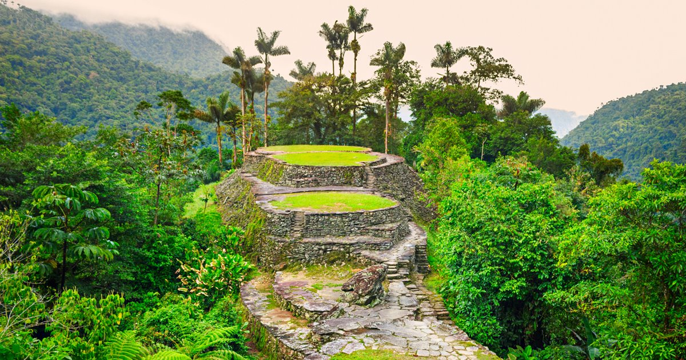

Teyuna, ou Ciudad Perdida, est une cité ancienne du peuple Tayrona, fondée vers l’an 800 dans la Sierra Nevada de Santa Marta, en Colombie. Cachée dans la jungle jusqu’en 1972, elle est composée de terrasses en pierre et de centaines de marches. Elle reste sacrée pour les peuples indigènes actuels et ne s’atteint qu’à pied, lors d’un trek de 4 à 6 jours.
